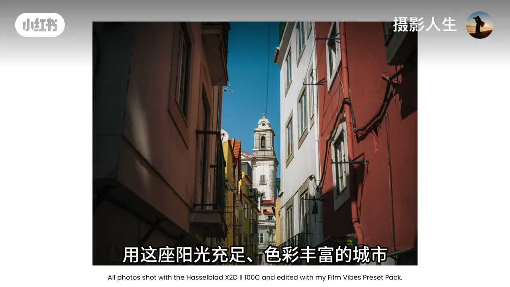
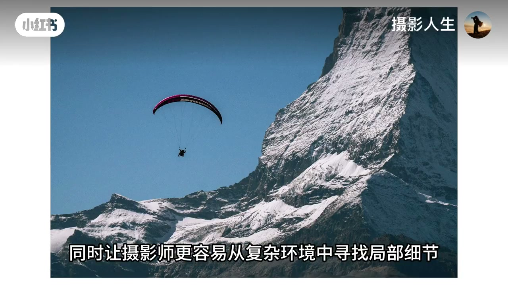
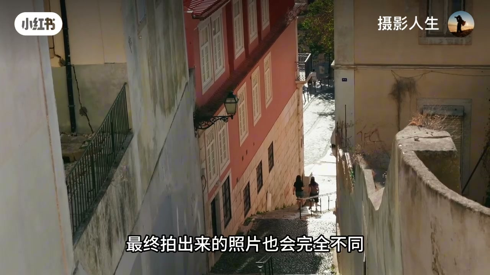
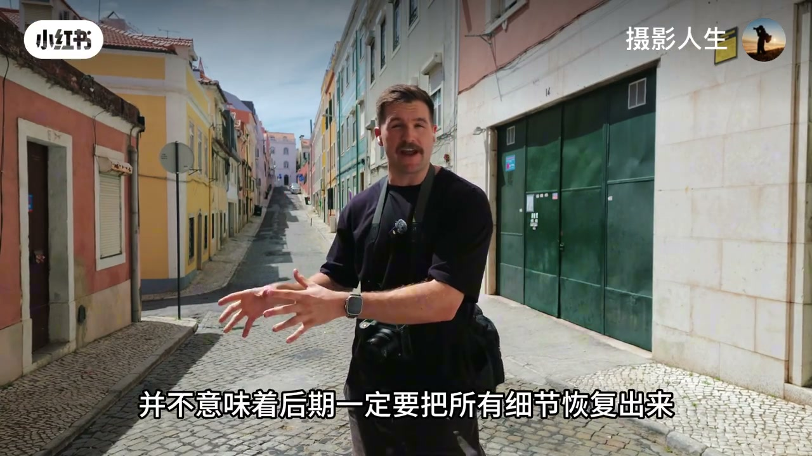
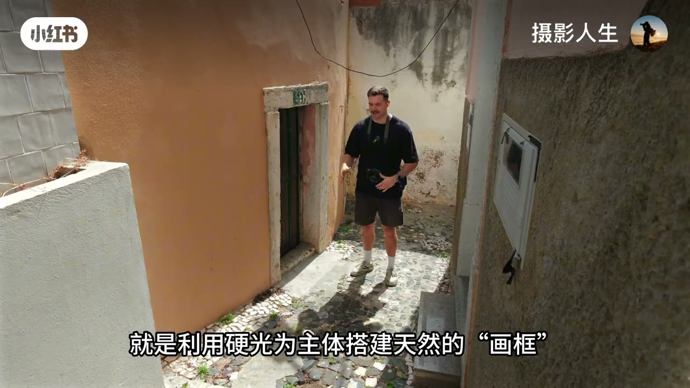
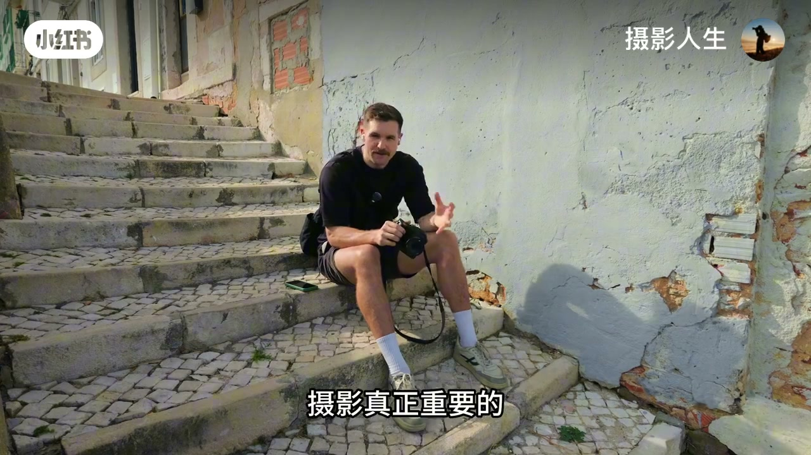
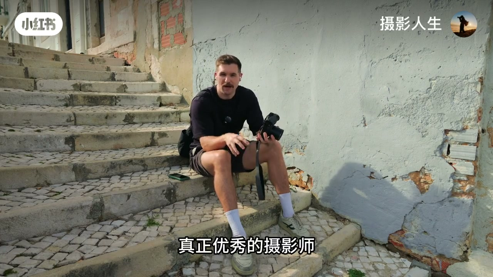

内容要点
「摄影人生」在强光南欧街巷实拍：初学者常被教导只追黄金时段，本片用高反差巷道证明——正午刺眼阳光不是禁区，关键是观察光线并利用侧光、逆光、阴影与反射。画面演示改方向、用阴影做框架、接受明暗冲击；口播强调后期不必把所有细节拉回。Whisper 前段几乎只有碎片，内容以画面字幕与片尾口播为准。
知识结构
阳光充足、色彩浓烈的巷道：钟楼、红墙、深影同时入画。
改机位/方向后，同一条街的明暗结构完全不同。
侧光逆光、阴影框架、强对比与鲜艳色彩制造冲击力。
学会观察并利用光线；黄金时段有优势，但不等于其他时间不值得拍。
正午光的「刺眼」可以是构图资源：阴影当框架、对比当叙事。别把黄金时段神话成唯一合法拍摄窗。
00:00-04:00把刺眼阳光当成城市滤镜
开场字幕与街景同步：用这座阳光充足、色彩丰富的城市做练习场。窄巷里红墙、黄楼与钟楼被正午光切开——一侧深影、一侧高光，本身就是构图。
讲解者站在鹅卵石街上比划：并不意味着后期一定要把所有细节恢复出来。接受一块死黑或一块死白，有时比强行「救回」更有照片感。




04:00-08:38观察光线，而不是等待黄金时段
中段继续用侧光、逆光、阴影与反射做示范：让硬光成为天然框架，或用强烈明暗对比与饱和色彩冲击视觉。改拍摄方向、选更简单的场景，都是「利用」而不是「对抗」。
片尾口播收束：摄影真正重要的是学会观察光线，然后思考怎样利用它。黄金时段当然有优势，但这并不意味着一天中其他时间都不值得拍摄——它可能是创造独特照片的一次机会。



完整转录（14段）
以下文本由 Whisper medium 模型自动转录，可能存在少量识别误差，已尽可能修正。
摄影初学者都会听到一句话
15
!
摄影真正重要的是学会观察光线
然后思考怎样利用它
可以选择更简单的场景
可以改变拍摄方向
也可以利用侧光、逆光、阴影和反射光
可以让映光成为天然的构图框架
也可以利用强烈的明暗对比和鲜艳的色彩
创造出更加具有视觉冲击力的照片
所谓黄金时段当然有它的优势
但这并不意味着一天中其他时间都不值得拍摄
它可能是创造独特照片的一次机会